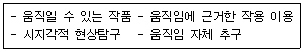
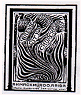
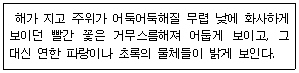
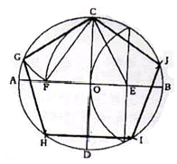
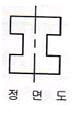
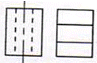
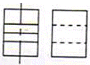
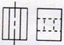
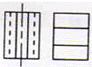

컴퓨터그래픽스운용기능사 (2007-01-28 기출문제)
1과목: 산업디자인 일반
1. 광고 디자인에서 전략적 입장의 DM이 아닌 것은?
- 단발성 DM
- 반복성 DM
- 단계적 DM
- 속성 DM
(정답률: 71%)

2. 다음 중 실내 디자인에 있어서 벽에 대한 설명으로 가장 올바른 것은?
- 공간의 구분, 공기의 차단, 소리의 차단, 보온 등의 기능을 갖고 있으며 인간의 시선이 가장 많이 머무르는 공간 요소이다.
- 대지와 차단 시켜주고, 걸어 다니고 가구를 놓을 수 있도록 고른 면을 제공한다.
- 시선이 별로 가지 않으므로 시각적 요소가 약하다.
- 건축에서 마감한 공간을 내부에서 재마감하여 전기조명 설치, 방음, 단열, 흡음, 통신 등의 기능을 담당한다.
(정답률: 86%)
3. 다음의 설명은 무엇에 관한 탐구방향을 나타내고 있는가?

- 아르데코
- 데스틸
- 키네틱 아트
- 팝아트
(정답률: 71%)
4. 1930년대 미국의 경제 불황기에 상품판매와 경제성장을 극복하기 위한 주된 디자인 철학은?
- 인간에게 봉사하는 디자인
- 소비자에게 봉사하는 디자인
- 신기술 개발에 충실한 디자인
- 대량생산이 가능한 디자인
(정답률: 62%)
5. 다음 중 디자인을 위한 정보 및 자료조사와 가장 거리가 먼 것은?
- 소비자 조사
- 디자인 등록
- 세무 조사
- 색채견본 조사
(정답률: 84%)
6. 실내공간계획에서의 동선에 관한 설명으로 잘못된 것은?
- 동선은 거리가 되도록 짧게 한다.
- 동선은 단순 명쾌하게 한다.
- 서로 다른 동선은 교차시킨다.
- 빈도가 높은 동선은 짧게 한다.
(정답률: 79%)
7. 브레인스토밍 회의기업의 원칙에 어긋나는 것은?
- 아이디어에 대한 비판 금지
- 자유로운 발언 추구
- 하나의 새로운 아이디어만을 추구
- 다른 아이디어와의 결합 및 개선
(정답률: 88%)
8. 다음 중 마케팅 조사의 실사방법이 아닌 것은?
- 개인 면접법
- 우편 조사법
- 관찰 조사법
- 확대 조사법
(정답률: 69%)
9. 다음 중 18세기말 영국에서 일어난 산업혁명의 디자인사적 의의로 가장 거리가 먼 것은?
- 양산제품의 고급화
- 디자인의 민주화
- 제품의 질 저하
- 대량생산의 실현
(정답률: 65%)
10. 면을 포지티브(Positive)한 면과 네가티브(negative)한 면으로 구분할 때, 다음 중 포지티브한 면이 성립되는 것은?
- 점의 확대
- 선의 집합
- 선으로 둘러싸인 것
- 점의 밀집
(정답률: 73%)
11. 인쇄의 4색 분판 작업과 관련이 없는 색상은?
- 녹색
- 마젠타
- 검정색
- 노랑색
(정답률: 78%)
12. 니콜라우스 페브스너가 새로운 양식의 특성이 잘 나타나있다고 평가한 다음의 작품(맥머도의 표지 디자인)과 관련된 디자인 양식은?

- 미술공예운동
- 아르누보
- 아르데코
- 데스틸
(정답률: 78%)
13. 다음 중 효율적 시장세분화를 위한 조건에 대한 설명이 잘못된 것은?
- 수익 가능성 : 가능한 최대량의 판매가 가능하도록 광고를 집중하여 집행하여야 한다.
- 측정 가능성 : 각 세분시장의 구매력이나 예상매출액 등은 측정 가능하여야 한다.
- 접근 가능성 : 해당 세분시장에 마케팅 활동을 효과적으로 집중시킬 수 있어야 한다.
- 실행 가능성 : 효율적인 마케팅 프로그램의 수립이 가능하고 실행될 수 있어야 한다.
(정답률: 60%)
14. 다음 중 굿 디자인(good design)을 위한 디자인의 조건에 포함되지 않는 것은?
- 합목적성
- 독창성
- 심미성
- 모방성
(정답률: 91%)
15. 문자 상으로는 개념, 생각하는 방법이라는 의미이며, 디자인 행위의 초기단계로서 대상의 테마와 개념의 구성을 말하는 것은?
- 모델링
- 분석
- 컨셉트
- 프리젠테이션
(정답률: 82%)
16. 제품 디자인의 최종 의사결정을 내려야 하는 디자인 관계자에게 제시용으로 만들어지는 모델은?
- 스터디 모델
- 프리젠테이션 모델
- 제작용 모델
- 이미지 모델
(정답률: 84%)
17. 디자인 전개 과정의 ‘분석’ 내용 중 디자인 문제의 범위 내에서 제품을 이루는 부품을 하나하나 분류하여 각각에 대해 평가, 분석하여 과도한 부분이 있으면 줄이거나 제거하는 분석은?
- 사용 과정 분석
- 관계 분석
- 원인 분석
- 가치 분석
(정답률: 60%)
18. 다음 중 디자인의 심미성과 가장 관련이 먼 것은?
- 기능적 형태
- 전통과 유행의 조화
- 장식적 구조
- 연상성
(정답률: 37%)
19. 디자인의 유형 중 도시의 대형화, 고층화에 따라 원활한 소통을 위해 등장한 것은?
- 인쇄매체 - 카다로그
- 청각적인 기호체계 - 전화
- 전파매체 - 라디오
- 사인시스템 - 대형 광고판
(정답률: 79%)
20. 다음 중 포장디자인의 기능과 가장 거리가 먼 것은?
- 보호성
- 편리성
- 상품성
- 교환성
(정답률: 83%)
2과목: 색채 및 도법
21. 다음 동시대비 중 보색대비에 관한 것은?
- 무채색 위의 유채색은 훨씬 많은 색으로 채도가 높아져 보이는 현상
- 밝은 색은 더 밝게, 어두운 색은 더 어둡게 보이는 색의 대비현상
- 색상의 거리가 가까울 때 일어나는 현상
- 서로의 영향으로 인하여 뚜렷해지고 각각의 채도가 더 높게 보이는 현상
(정답률: 68%)
22. 가장 가까운 색채끼리의 배색은 보는 사람에게 친근감을 주며 조화를 느끼게 한다. 이와 관련된 색채조화의 원리는?
- 질서의 원리.
- 명료성의 원리
- 동류의 원리
- 대비의 원리
(정답률: 72%)
23. 다음 중 빛의 성질에 대한 현상을 잘못 짝지은 것은?
- 굴절 - 렌즈나 프리즘
- 산란 - 저녁노을
- 회절 - 부처님후광
- 간섭 - 무지개
(정답률: 71%)
24. 색채조화의 기하학적 표현과 면적에 따른 색채조화론을 주장한 사람은?
- 셰브럴
- 오스트발트
- 문 · 스팬서
- 비렌
(정답률: 60%)
25. 색의 항상성(color constancy)을 바르게 설명한 것은?
- 빛의 양과 거리에 따라 다르게 인지된다.
- 조명의 밝기에 따라 색채가 다르게 인지된다.
- 배경색과 조명이 변해도 색채를 그대로 인지한다.
- 배경색에 따라 색채가 다르게 인지된다.
(정답률: 74%)
26. 일반적인 제도 용지에 대한 설명으로 틀린 것은?
- 한국산업규격(KS A 00⑤)에 따라 A열을 사용한다.
- A열 제도용지의 짧은 변과 긴 변의 비는 1 : √2 이다
- A0 도면의 넓이는 약 1㎡이다
- 큰 도면을 접을 때는 A2 크기로 접는다.
(정답률: 73%)
27. 투시도법의 기본 요소는?
- 대상, 형상, 거리
- 색채, 명암, 음영
- 그늘과 그림자
- 시점, 대상물, 거리
(정답률: 80%)
28. 빨강색과 노랑색을 감산혼합 했을 때의 색은?
- 녹색
- 파랑
- 주황
- 보라
(정답률: 82%)
29. 다음 중 물체의 앞면 모서리는 수평선과 평행하게 하고, 옆면 모서리는 수평선과 임의의 각도 α로 하여 그린 투상도는?
- 등각투상도
- 부등각투상도
- 사투상도
- 축측투상도
(정답률: 55%)
30. 유각 투시도의 소점은?
- 1개
- 2개
- 3개
- 4개
(정답률: 67%)
31. 도면에서 사용하는 ‘판의 두께’를 나타내는 기호는?
- t
- c
- R
- s
(정답률: 89%)
32. 순수 노란색 페인트에 순수 검정색 페인트를 혼합하면?
- 색상과 채도는 변함없고, 명도가 높아진다.
- 색상과 명도는 변함없고, 채도가 낮아진다.
- 색상은 변함없고, 명도와 채도가 낮아진다.
- 명도와 채도는 변함없고, 색상이 변한다.
(정답률: 64%)
33. 색채의 감정적인 효과 중 중량감을 좌우하는 요인은?
- 색상
- 명도
- 채도
- 톤(tone)
(정답률: 79%)
34. 영국령 당시의 인도인 병사의 제복에 쓰인 색으로 영국색채협의회, 미국색채협회의 색채사전에 표준화되어 있다. 1848년경부터 쓰인 이 색명은?
- 베이지(Beige)
- 카키(Khaki)
- 올리브(Olive)
- 모스그린( Moss Green)
(정답률: 74%)
35. 다음은 색채 현상 중 어느 것에 관한 설명인가?

- 푸르킨예 현상
- 색음현상
- 베졸트-브뤼케 현상
- 헌트효과
(정답률: 89%)
36. 등각 투상도에서 물체의 세 모서리가 이루는 등각도는?
- 30°
- 60°
- 90°
- 120°
(정답률: 81%)
37. 다음 중 정신질환자의 치료에 도움이 되는 병실 색채로 적합한 것은?
- 고채도의 빨강
- 고채도의 연두
- 고채도의 주황
- 중간채도의 파랑
(정답률: 77%)
38. 그림과 같이 원에 내접하는 정오각형을 그릴 때 다음 중 가장 먼저 구해야 할 점은?

- E 점
- F 점
- G 점
- J 점
(정답률: 75%)
39. 주어진 정명도를 기준으로 3각도법에 의한 평면도(왼쪽)와 측면도(오른쪽)가 맞는 것은?





(정답률: 70%)
40. 다음 중 유채색은?
- 흰색
- 회색
- 보라
- 검정
(정답률: 88%)
3과목: 디자인 재료
41. 다음 중 면포펄프 또는 특별히 정제한 화학펄프로 만든 원료에 황상바륨과 젤라틴을 바른 종이는?
- 황산지
- 바리타지
- 습윤 강력지
- 감압지
(정답률: 64%)
42. 다음 중 플라스틱의 특징 설명으로 옳은 것은?
- 가공이 어렵다.
- 열전도율이 높다.
- 내수성이 좋다.
- 다른 재료와의 복함이 어렵다.
(정답률: 69%)
43. 다음 중 가공지의 제조방법에 속하는 것은?
- 도피가공
- 염수가공
- 탈수가공
- 초산가공
(정답률: 74%)
44. 다음 중 재료의 성질과 이용에 관한 성분, 구조, 제조 공정에 관한 지식의 생성과 발전을 도모하는 학문은?
- 디자인학
- 광물학
- 재료학
- 고분자학
(정답률: 78%)
45. 형상 기억 합금의 고려 사항이 아닌 것은?
- 온도를 임의로 조절할 수 있는가
- 형상 회복에 따라 발생하는 힘은 어느 정도인가
- 몇 ℃에서 형상이 회복 되는가
- 수소의 저장과 방출은 수월한가.
(정답률: 64%)
46. 다음 중 유화성질과 비슷하며 합성수지를 사용하여 만든 재료로 접착성과 내수성이 강한 재료는?
- 아크릴 컬러
- 매직 마커
- 픽사티브
- 스크린 톤
(정답률: 69%)
47. 다음 중 장식품이나 의료기기, 전기용품, 양식기류 등에 주로 쓰이는 도금 방법은?
- 금 도금
- 은 도금
- 주석 도금
- 납 도금
(정답률: 72%)
48. 다음 중 흑백 필름의 종류로 볼 수 없는 것은?
- 트랜스퍼런스 필름
- 레귤러 필름
- 팬크로매틱 필름
- 적외선 필름
(정답률: 44%)
4과목: 컴퓨터 그래픽스
49. 다음 중 화상이미지를 표현하는 출력장치로서 그래픽 카드의 신호를 받아들여 시각적 형태의 영상물로 나타내 주는 것은?
- 모니터
- 프린터
- 플로터
- 스캐너
(정답률: 77%)
50. 포토샵 프로그램에서 마술봉(Magic Wand) 툴의 기능을 잘못 설명한 것은?
- 마우스로 클릭한 부분과 같거나 유사한 색항의 근처 픽셀들이 선택된다.
- 선택 되어지는 영역은 색상과 명도에 근거한다.
- 색상과 명도의 허용치 조정은 Tolerance 값으로 설정한다.
- Tolerance 값은 0에서 255까지이며, 최소치로 선택하면 이미지의 전체 영역이 선택된다.
(정답률: 73%)
51. Anti-Aliased 의 기능을 가장 잘 설명한 것은?
- 이미지 경계부위의 컬러와 계조를 유연하게 하는 기능
- 이미지의 픽셀이 갖고 있는 명도대비를 증가시키는 기능
- 이미지 픽셀들의 크기를 증가시키는 기능
- 이미지의 경계부위를 뚜렷하게 하는 기능
(정답률: 64%)
52. 다음 중 모아레 현상에 관한 설명으로 틀린 것은?
- TV에서 가는 줄무늬 의상을 촬영할 때 모아레 현상이 생긴다.
- 하프톤 스크린이 잘못 설정되었을 때 나타난다.
- 인쇄물 이미지를 스캔 방받을 경우에는 필터를 이용하여 모아레 현상을 막을 수 있다.
- 하프톤 도트 모아레 패턴은 모니터 상에서 교정이 가능하다.
(정답률: 58%)
53. 디지털 해상도에 대한 설명 중 적합하지 않은 것은?
- 한 이미지의 해상도는 측정단위 당 픽셀의 수를 의미한다.
- 비트 해상도는 각 픽셀에 저장되는 색 정보의 양과 관련이 있다.
- 고해상도로 스캔하면 데이터 크기도 커진다.
- 모니터 해상도는 보통 72dpi 이며, 고해상도 이미지인 경우 모니터 해상도를 수시로 변경한다.
(정답률: 70%)
54. 가산혼합의 기본색에 의한 색상 혼합결과가 맞는 것은?
- Blue + Green = Yellow
- Red + Green = Cyan
- Blue + Red = Magenta
- Red + Blue + yellow = Black
(정답률: 63%)
55. 달력의 디자인을 실제로 제작하고자 한다. 다음 중 편집 프로그램으로 가장 적절한 소프트웨어는?
- CAD
- 3D MAX
- Quark Xpress
- Photoshop
(정답률: 58%)
56. CAD나 일러스트레이터로 작업한 내용을 포토샵으로 불러서 작업하려 한다. 이때 거쳐야 할 과정은?
- 압축
- 스크랩팅
- 래스터라이징
- 벡터화 과정
(정답률: 72%)
57. 색채계에 따른 Full Color의 표현은 일반적으로 RGB, CMYK, Lab, HSK, HSV 등으로 표시한다. 컴퓨터그래픽스 프로그램에서 이러한 색채계를 선택하는 명령어는?
- Adjust
- Mode
- Duplicate
- Crop
(정답률: 75%)
58. 애니메이션은 조금씩 다른 이미지들이 필름으로 만들어져 연속적으로 투사시켜 잔상효과에 의하여 연속적으로 움직이는 듯한 착시를 일으키게 하는 것이다. 연속적인 이미지를 얻기 위하여는NTSC방식의 텔레비전에서 초당 몇 장의 그림이 투사되는가?
- 12장
- 16장
- 24장
- 30장
(정답률: 53%)
59. 다음 중 사운드를 재생(기록)할 수 있는 파일형식이 아닌 것은?
- MIC
- AIF
- WAV
- MP3
(정답률: 54%)
60. 블러링(bluring)의 효과를 옳게 설명한 것은?
- 이미지를 흐리게 만든다.
- 이미지를 복사한다.
- 이미지의 색을 보색으로 변경한다.
- 이미지의 콘트라스트를 높인다.
(정답률: 87%)